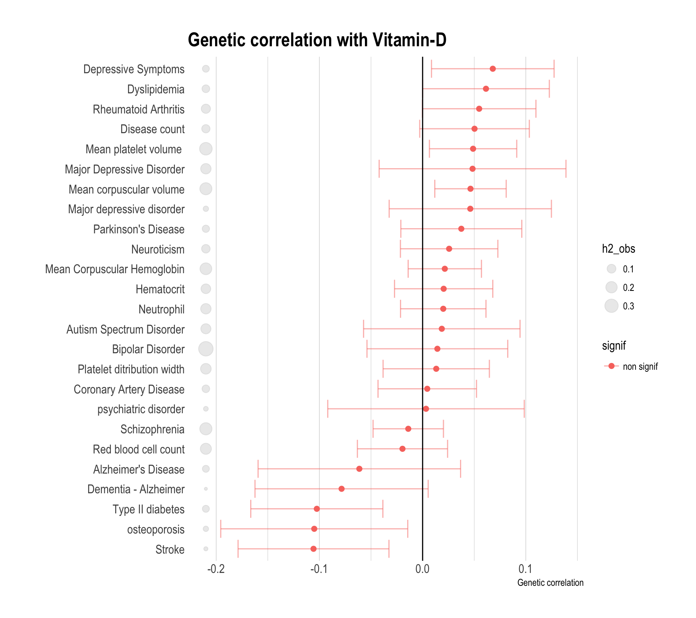

This document report the application of LDSC to the vitamin D GWAS result. It aims to determine the heritability of the trait and check the genetic correlation of vitamin D with several mental disorders.
1 - Installing LDSC
I lost a few hours of my life installing the LDSC software properly. Here are a few hints to do it faster next time. Important:
Install anaconda with python version 2, not 3
When calling LDSC, I must use the python version stored in the lDSC folder, not the default one.
#Delta
cd /shares/compbio/Group-Wray/YanHoltz/SOFT
git clone https://github.com/bulik/ldsc.git
# Then install Anaconda. Warning: must be version 2 of python, not 3.
cd /shares/compbio/Group-Wray/YanHoltz/SOFT
wget https://repo.anaconda.com/archive/Anaconda2-5.1.0-Linux-x86_64.sh
#start installation in /shares/compbio/Group-Wray/YanHoltz/SOFT
# Then follow https://github.com/bulik/ldsc
# To have help:
/shares/compbio/Group-Wray/YanHoltz/SOFT/ldsc/ldsc.py -h
# I also download LD scrore provided by LDSC:
wget https://data.broadinstitute.org/alkesgroup/LDSCORE/eur_w_ld_chr.tar.bz2
tar -xvjf eur_w_ld_chr.tar.bz2
2 - Heritability and LD Score Regression Intercept.
I can use LD score regression to study the the inflation in test statistics due to population structure.
For the Vitamin D GWAS, the intercept of the LD score regression is 1.0202 with a standard error of 0.0068. The ratio is 0.1604 with a standard error of 0.0538.
If I understood well, the intercept tends to increase with the sample size even if no population structure is present. It is thus advised to check the ratio instead. In both case, it looks like a slight population structure is observed in this GWAS, but probably negligible.
The intercept minus 2 standard errors is very close to 1:
0.1604 - 1.96*0.0538 = 1.006872
The SNP heritability as computed using LD score regression is 0.069 with a standard error of 0.017. This value is very close from the one provided by Xia Jiang et al (7.5%)
# Good folder
cd /shares/compbio/Group-Wray/YanHoltz/VITAMIND_XIA_ET_AL/4_LDSC/HERIT
# GWAS result at good format: snpid hg18chr bp a1 a2 or se pval info ngt CEUaf
cat /shares/compbio/Group-Wray/YanHoltz/DATA/GWAS/XiaEtAl_VitaminD/GWAS_vitaminD_XiaEtAL.ma | awk '{print $1, $2, $3, $7, $5}' > input.txt
# Munge. Be careful to call the python version which is IN ldsc.
/shares/compbio/Group-Wray/YanHoltz/SOFT/anaconda3/envs/ldsc/bin/python /shares/compbio/Group-Wray/YanHoltz/SOFT/ldsc/munge_sumstats.py \
--sumstats input.txt \
--N 79000 \
--out tmp \
--merge-alleles /shares/compbio/Group-Wray/YanHoltz/SOFT/ldsc/eur_w_ld_chr/w_hm3.snplist
# Heritability and the LD Score regressiuon intercept
/shares/compbio/Group-Wray/YanHoltz/SOFT/anaconda3/envs/ldsc/bin/python /shares/compbio/Group-Wray/YanHoltz/SOFT/ldsc/ldsc.py \
--h2 tmp.sumstats.gz \
--ref-ld-chr /shares/compbio/Group-Wray/YanHoltz/SOFT/ldsc/eur_w_ld_chr/ \
--w-ld-chr /shares/compbio/Group-Wray/YanHoltz/SOFT/ldsc/eur_w_ld_chr/ \
--out output_h2
# Check result
more output_h2.log
3 - Compute Genetic correlation
Script to do it for one file
# Good folder
cd /shares/compbio/Group-Wray/YanHoltz/VITAMIND_XIA_ET_AL/4_LDSC/GENET_COR
# GWAS result at good format: snpid hg18chr bp a1 a2 or se pval info ngt CEUaf
cat /shares/compbio/Group-Wray/YanHoltz/DATA/GWAS/XiaEtAl_VitaminD/GWAS_vitaminD_XiaEtAL.ma | awk '{print $1, $2, $3, $7, $5, $8}' > input.txt
zcat /shares/compbio/Group-Wray/YanHoltz/DATA/GWAS/GWAS_SUMSTAT/alzheimers_igap_2013.txt.gz | awk '{print $1, $2, $3, $7, $5, $8}' > alz.txt
# Munge. Be careful to call the python version which is IN ldsc.
/shares/compbio/Group-Wray/YanHoltz/SOFT/anaconda3/envs/ldsc/bin/python /shares/compbio/Group-Wray/YanHoltz/SOFT/ldsc/munge_sumstats.py \
--sumstats input.txt \
--out input \
--merge-alleles /shares/compbio/Group-Wray/YanHoltz/SOFT/ldsc/eur_w_ld_chr/w_hm3.snplist
# Munge. Be careful to call the python version which is IN ldsc.
/shares/compbio/Group-Wray/YanHoltz/SOFT/anaconda3/envs/ldsc/bin/python /shares/compbio/Group-Wray/YanHoltz/SOFT/ldsc/munge_sumstats.py \
--sumstats alz.txt \
--N 79000 \
--out alz \
--merge-alleles /shares/compbio/Group-Wray/YanHoltz/SOFT/ldsc/eur_w_ld_chr/w_hm3.snplist
# LD Score Regression
/shares/compbio/Group-Wray/YanHoltz/SOFT/anaconda3/envs/ldsc/bin/python /shares/compbio/Group-Wray/YanHoltz/SOFT/ldsc/ldsc.py \
--rg input.sumstats.gz,alz.sumstats.gz \
--ref-ld-chr /shares/compbio/Group-Wray/YanHoltz/SOFT/ldsc/eur_w_ld_chr/ \
--w-ld-chr /shares/compbio/Group-Wray/YanHoltz/SOFT/ldsc/eur_w_ld_chr/ \
--out vitD_alz
To do it on every GWAS result of my analysis
# Good folder
cd /shares/compbio/Group-Wray/YanHoltz/VITAMIND_XIA_ET_AL/4_LDSC/GENET_COR
# Reformat and mudge each GWAS summary statistics you wanna study
for i in /shares/compbio/Group-Wray/YanHoltz/DATA/GWAS/GWAS_SUMSTAT/* ; do
filename=$(echo $i | sed 's/.*UMSTAT\///' | sed 's/.gz//') ;
echo $filename
echo "zcat $i | awk '{print \$1, \$2, \$3, \$7, \$5, \$8}' > ${filename}_ready" > script_${filename}
echo "/shares/compbio/Group-Wray/YanHoltz/SOFT/anaconda3/envs/ldsc/bin/python /shares/compbio/Group-Wray/YanHoltz/SOFT/ldsc/munge_sumstats.py --sumstats ${filename}_ready --out ${filename} --merge-alleles /shares/compbio/Group-Wray/YanHoltz/SOFT/ldsc/eur_w_ld_chr/w_hm3.snplist" >> script_${filename}
chmod 777 script_${filename}
tmp_command=$(echo ./script_${filename})
echo $tmp_command
qsubshcom "$tmp_command" 1 5G mudge 10:00:00 ""
done
# Idem for Vitamin D
cat /shares/compbio/Group-Wray/YanHoltz/DATA/GWAS/XiaEtAl_VitaminD/GWAS_vitaminD_XiaEtAL.ma | awk '{print $1, $2, $3, $7, $5, $8}' > input.txt
/shares/compbio/Group-Wray/YanHoltz/SOFT/anaconda3/envs/ldsc/bin/python /shares/compbio/Group-Wray/YanHoltz/SOFT/ldsc/munge_sumstats.py \
--sumstats input.txt \
--out input \
--merge-alleles /shares/compbio/Group-Wray/YanHoltz/SOFT/ldsc/eur_w_ld_chr/w_hm3.snplist
# Clean
rm *ready *log script*
# Run LD score regression for all of them
for i in *sumstats.gz ; do
filename=$(echo $i | sed 's/.sumstats.gz//')
echo $filename;
echo "/shares/compbio/Group-Wray/YanHoltz/SOFT/anaconda3/envs/ldsc/bin/python /shares/compbio/Group-Wray/YanHoltz/SOFT/ldsc/ldsc.py \
--rg input.sumstats.gz,$i \
--ref-ld-chr /shares/compbio/Group-Wray/YanHoltz/SOFT/ldsc/eur_w_ld_chr/ \
--w-ld-chr /shares/compbio/Group-Wray/YanHoltz/SOFT/ldsc/eur_w_ld_chr/ \
--out vitD_${filename}" > script_${filename}
chmod 777 script_${filename}
tmp_command=$(echo ./script_${filename})
echo $tmp_command
qsubshcom "$tmp_command" 1 5G genet_cor 10:00:00 ""
done
# Concatenate result in a clean file
cat vit*log | grep -B1 "^input" | head -1 | uniq > genetic_correlation.txt
cat vit*log | grep "^input" >> genetic_correlation.txt
# transfer locally
cd /Users/y.holtz/Dropbox/QBI/4_UK_BIOBANK_GWAS_PROJECT/VitaminD-GWAS/0_DATA
scp y.holtz@delta.imb.uq.edu.au:/shares/compbio/Group-Wray/YanHoltz/VITAMIND_XIA_ET_AL/4_LDSC/GENET_COR/genetic_correlation.txt .
4 - Primary traits
Here is the result for the primary traits. A red points means that the observed genetic correlation is not significantly different from 0. Genetic correlation are distributed between -0.12 and 0.12. Note that the grey point next to the trait name represents the heritability.
# read the genet correlation
data <- read.table("0_DATA/genetic_correlation.txt", header=T)
# Read the meaning of files:
meaning=read.table("0_DATA/list_of_traits_GSMR.csv", header=T, sep=",")
# Merge
data <- data %>%
mutate(p2=gsub(".sumstats.gz","",p2)) %>%
left_join(meaning, by=c("p2"="File"))
# Show trait important
data %>%
filter(Main=="X") %>%
arrange(rg) %>%
mutate(signif=ifelse(p<0.05,"signif","non signif")) %>%
mutate(Trait=factor(Trait, unique(Trait))) %>%
ggplot( aes(x=Trait, y=rg, color=signif)) +
#geom_segment( aes(x=Trait, xend=Trait, y=0, yend=rg), color="grey") +
geom_errorbar(aes(x=Trait, ymin=rg-se, ymax=rg+se), alpha=0.5) +
geom_point(size=2) +
geom_point( aes(x=Trait, y=-0.21, size=h2_obs), color="grey", alpha=0.3) +
coord_flip() +
theme_ipsum() +
theme(legend.position="none") +
ylab("Genetic correlation") +
xlab("") +
theme(
panel.grid.major.y = element_blank()
) +
geom_hline(yintercept=0) +
ggtitle("Genetic correlation with Vitamin-D")

5 - Secondary traits
Here is the result for the secondary traits. Genetic correlations are stronger. It is of interest that both IQ GWAS are significantly negatively correlated with vitamin D using a threshold of 0.05.
It does not look like there is much consistency between this genetic correlation results and GSMR results. On the other hand, I’m not sure if I except any correlation between both? Must think about it. TODO: plot the relationship rg / gsmr.